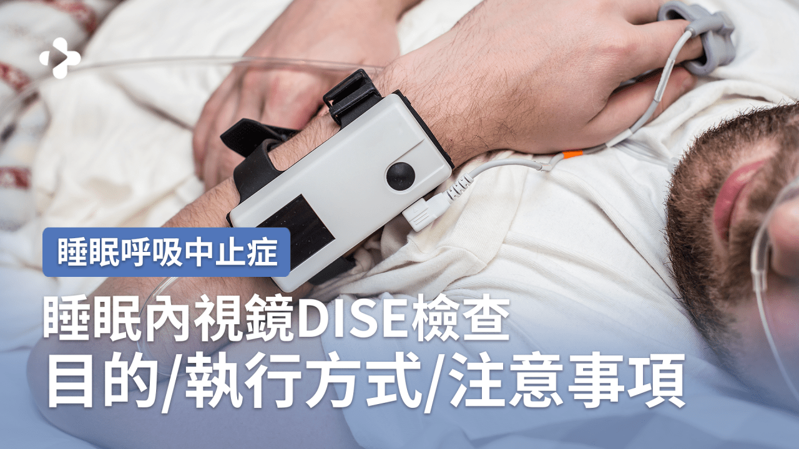
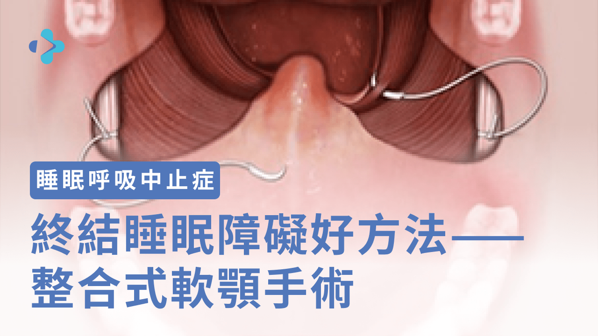

蔡明劭 醫師
Ming-Shao Tsai, MD
關於醫師
睡眠呼吸中止症
衛教文章
衛教影片
預約看診
關於醫師
睡眠呼吸中止症
衛教文章
衛教影片
預約看診
首頁
›
衛教文章
衛教文章
蔡明劭醫師整理的睡眠呼吸健康衛教內容，涵蓋睡眠呼吸中止症、CPAP、手術輔具及鼻過敏等主題
全部
睡眠呼吸中止症
手術輔具
鼻過敏鼻息肉
睡眠呼吸中止症
嗜睡 打鼾 我得了睡眠呼吸中止症嗎？他的治療方式會有哪些？
睡眠呼吸中止症
怎麼治睡眠呼吸中止症？
睡眠呼吸中止症
陽壓呼吸器一戴就是一輩子了？
睡眠呼吸中止症
電漿刀(PEAK)與電燒刀施行懸壅垂腭咽成形術之術後疼痛比較！
睡眠呼吸中止症
打鼾嚴重與否如何檢測？
睡眠呼吸中止症
中壯年睡眠問題：正規檢查與治療的重要性
睡眠呼吸中止症
獨創整合式睡眠手術 還你甜蜜美夢！
睡眠呼吸中止症
(表格) 讓您一覺好眠的 5 種治療方式
睡眠呼吸中止症
想透過手術治打鼾嗎？6個常見的手術類型分析給你聽
睡眠呼吸中止症
扁桃腺摘除及懸壅垂顎咽成形手術

睡眠呼吸中止症
睡眠內視鏡DISE檢查 誰需要做？怎樣是阻塞現象呢！

睡眠呼吸中止症
終結睡眠障礙好方法 – 整合式軟顎手術
睡眠呼吸中止症
睡眠呼吸中止症全方位治療
睡眠呼吸中止症
內科治療方式：陽壓呼吸器
睡眠呼吸中止症
[Q&A] 關於DISE檢測細節
睡眠呼吸中止症
微創手術縮短恢復期與術後照護時間，能儘快回歸職場
睡眠呼吸中止症
術後改善用力呼吸、睡眠品質，讓精神狀態集中
睡眠呼吸中止症
[Q&A] 認識睡眠呼吸中止症
睡眠呼吸中止症
[Q&A] 透過睡姿改善症狀
睡眠呼吸中止症
[Q&A] 陽壓呼吸器常見問題
睡眠呼吸中止症
[Q&A] 減重對阻塞型症狀影響
睡眠呼吸中止症
[Q&A] 詳談呼吸睡眠手術相關問題
手術輔具
側睡止鼾枕 為何可以止鼾？永久有效嗎？
手術輔具
電漿刀(PEAK)與電燒刀施行懸壅垂腭咽成形術之術後疼痛比較！
手術輔具
[總覽表] 鼻部手術術後填塞敷料
手術輔具
舌頭也要做運動！跟著做 改善您的如雷鼾聲
手術輔具
自費低溫電漿刀 差異在哪？改善了什麼？
手術輔具
達文西微創的傷口小優勢 也適用於睡眠呼吸中止症嗎？
鼻過敏鼻息肉
藥物治療無效的過敏性鼻炎還有救嗎？
鼻過敏鼻息肉
感冒久久不癒，可能是急性鼻竇炎？
鼻過敏鼻息肉
手術輔料 真能減輕疼痛？哪些人竟無法選用！
鼻過敏鼻息肉
台灣每三人就有一位鼻過敏，它竟也是阻礙好眠的兇手！
鼻過敏鼻息肉
季節交替 你「哈啾、哈啾」個不停嗎？鼻過敏如何改善？
治療指引
睡眠呼吸中止症 治療指引
想看更多蔡醫師的文章？
前往 Medify 查看完整醫師文章頁面
前往 Medify ↗
查看衛教影片

.png)


.png)
.png)
![[Q&A] 關於DISE檢測細節](images/articles/睡眠呼吸中止症%20–%20第%202%20頁%20–%20MEDIFY%20醫病關係平台%20(4).png)
.png)
.png)
![[Q&A] 透過睡姿改善症狀](images/articles/睡眠呼吸中止症%20–%20第%203%20頁%20–%20MEDIFY%20醫病關係平台.png)
![[Q&A] 陽壓呼吸器常見問題](images/articles/睡眠呼吸中止症%20–%20第%203%20頁%20–%20MEDIFY%20醫病關係平台%20(2).png)
![[Q&A] 減重對阻塞型症狀影響](images/articles/睡眠呼吸中止症%20–%20第%203%20頁%20–%20MEDIFY%20醫病關係平台%20(3).png)
![[Q&A] 詳談呼吸睡眠手術相關問題](images/articles/Video%20縮圖模板-無示意圖.png)